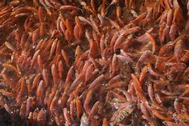
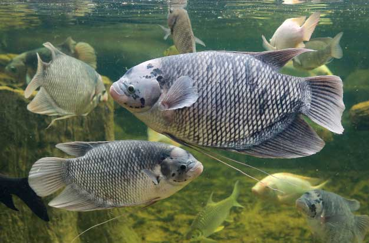
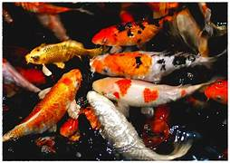

Jenis-Jenis Budidaya Ikan

Budidaya Ikan Lele
Ikan lele adalah ikan air tawar yang banyak dibudidayakan karena cepat tumbuh dan tahan terhadap lingkungan ekstrem.

Budidaya Ikan Nila
Ikan nila mudah dikembangbiakkan dan merupakan ikan konsumsi favorit karena nilai gizinya tinggi.

Budidaya Ikan Gurame
Ikan gurame sering dibudidayakan di kolam atau tambak karena ukurannya yang besar dan dagingnya yang lezat.

Budidaya Ikan Koi
Ikan koi biasanya dibudidayakan untuk hiasan dan sering dipelihara di kolam-kolam estetika.